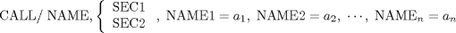

| 12.2. Call by Parameter Name and Value | ||
|---|---|---|
 | Chapter 12. Special Programs in APT -- CALL |  |
| 12.2. Call by Parameter Name and Value | ||
|---|---|---|
| | Chapter 12. Special Programs in APT -- CALL | |
A special program in APT can also be called by the following APT statement:
where: 1 ≤ n ≤ 25
The words CALL, NAME, SEC1, and SEC2 have the same meaning as assigned in Section 12.1. The labels (up to six characters) NAME1, NAME2, etc., are the alphanumeric identifiers expected by the special program for each parameter. The parameter names NAME1, NAME2, etc., are assigned the parameter values , etc., respectively, by the CALL statement. In addition, the parameter names NAME1, NAME2, etc., and their associated parameter values can be in any order--it is expected that the special program can differentiate between the arguments, since they are labeled. A maximum of 25 parameter names and values is allowed.
| |  | |
| Chapter 12. Special Programs in APT -- CALL |  | 12.3. Use of Special Program |